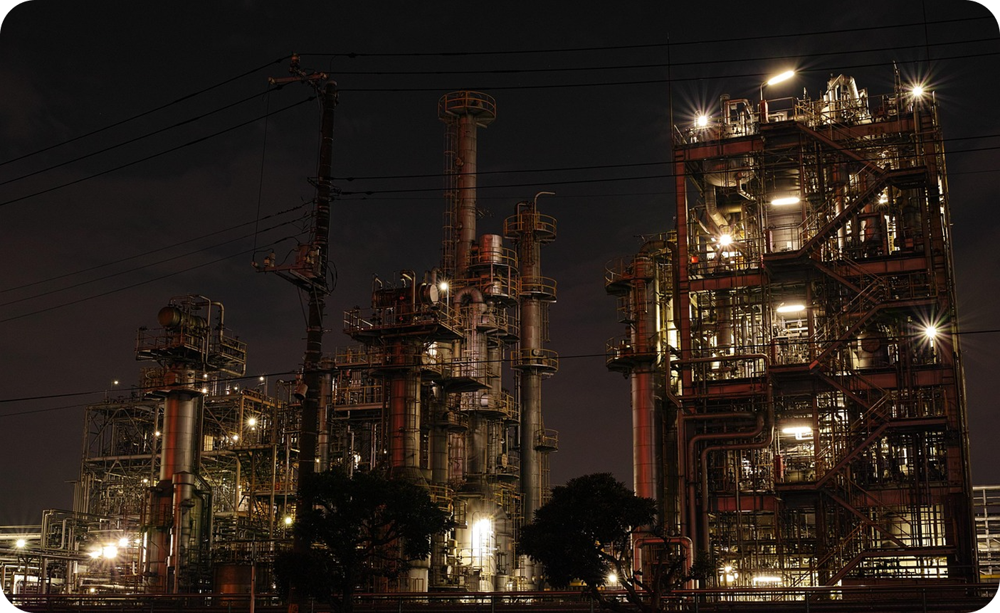
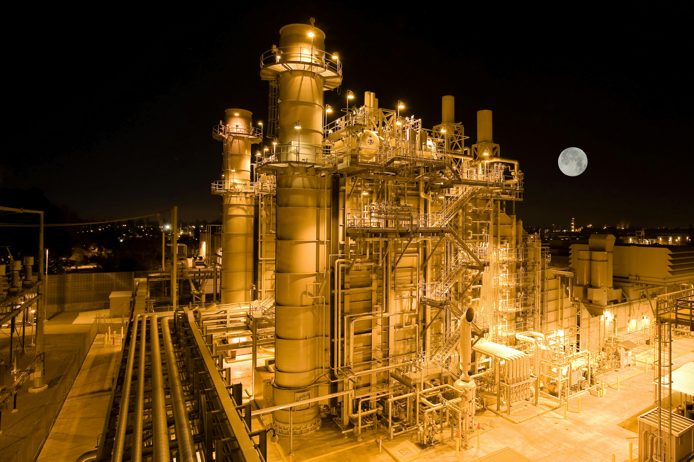
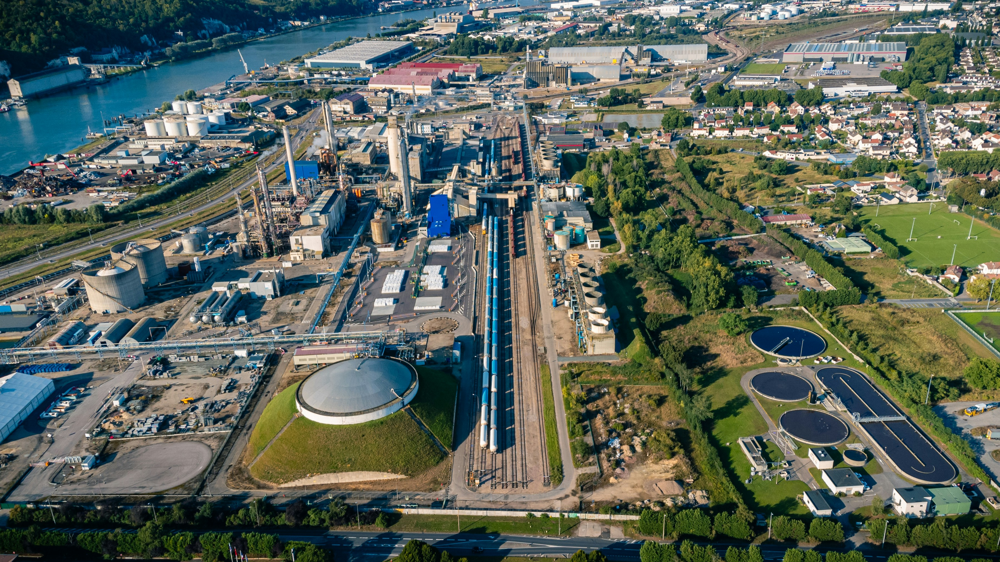
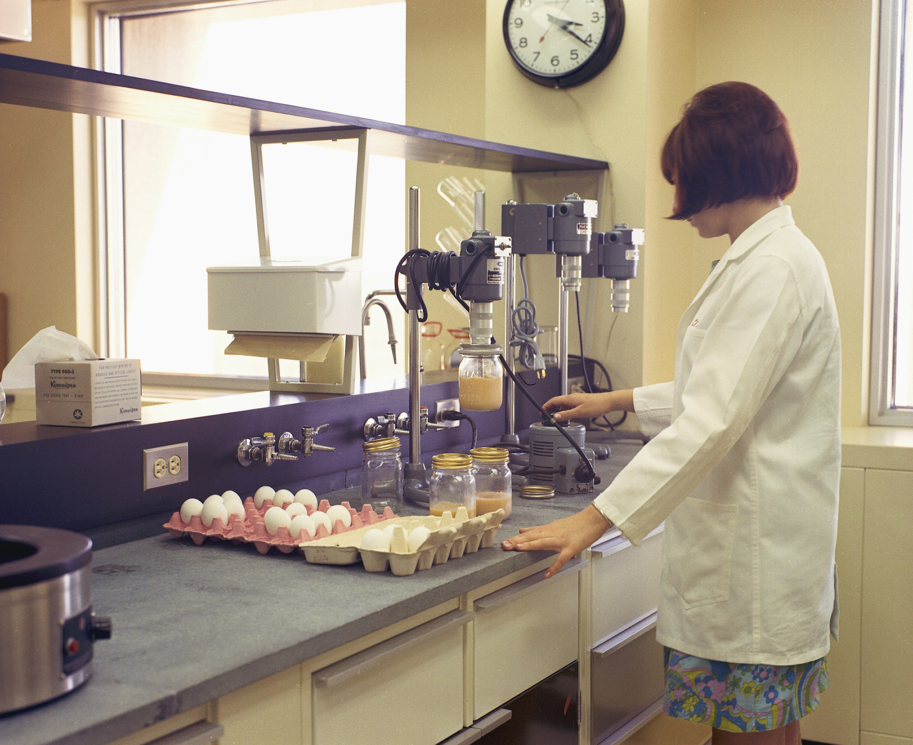
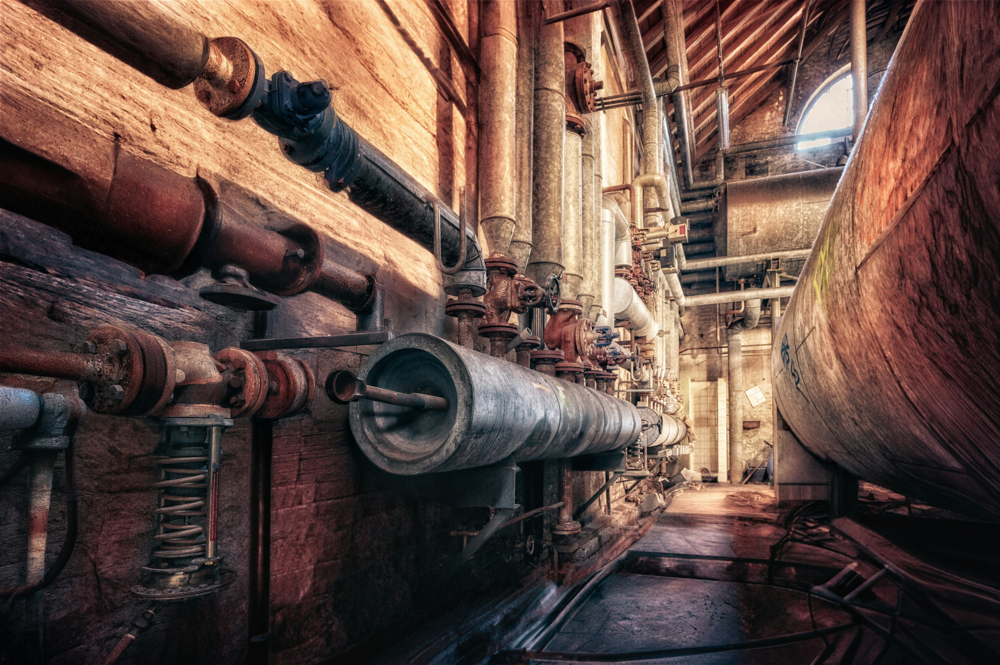
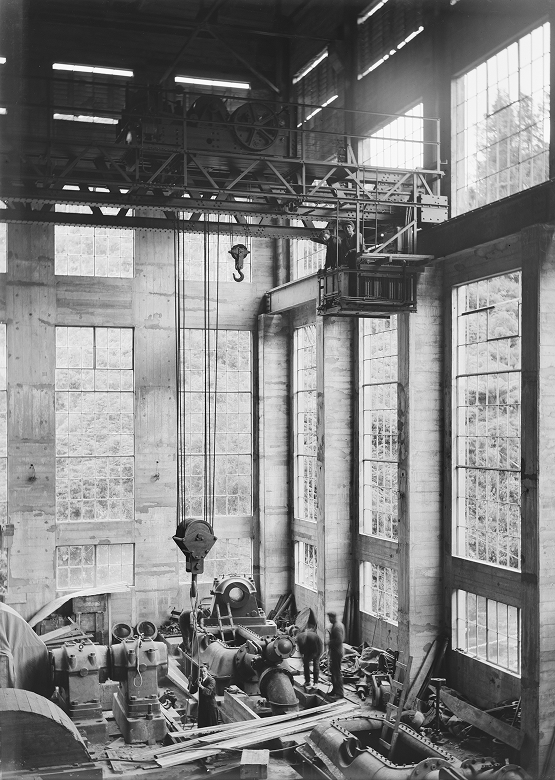

HOME > 회사소개 > 회사연혁
회사연혁Innovation
발자취마다 쌓아온 신뢰와 가치, 미래를 향한 약속

2020–NOW
- 2025
- • 07 CCUS 설비 준공
- • 02 금호그린바이오창원(주) 계열 편입
- 2024
- • 10 금호그린바이오부산(주) 계열 편입
- 2023
- • 10 케이앤에이치특수가스(주) 계열 편입
- 2022
- • 10 케이앤에이치특수가스(주) 계열 편입
- 2021
- • 07 금호폴리캠(주)지분 인수 (지분율:100%)
- • 02 금호그린바이오창원(주) 계열 편입
- 2020
- • 04 (주)디앤케이켐텍 계열 편입

2010–2019
- 2018
- • 12 금호티앤엘(주) 지분 인수 (지분율:100%)
- • 04 금호피앤비화학(주) 지분 인수 (지분율:100%)
- 2017
- • 09 미국 법인(애틀란타) 설립
- 2016
- • 08 (주) 강원학교태양광 지분 인수
- • 04 영광백수풍력발전 (주) 계열 편입
- • 04 여수제2에너지 증설 준공
- • 03 말레이시아 법인 설립
- 2015
- • 10 상해금호일려소료유한공사 금산공장 준공
- • 05 철도솔라 (주) 계열 편입
- 2014
- • 12 여수페트로 (주) 계열 편입
- 2013
- • 10 탄소나노튜브 공장 준공
- • 05 코리아에너지발전소 (주) 계열 편입
- 2011
- • 03 예산 건자재공장 준공 (건자재 사업)
- • 02 여수고무제2공장 준공

2000–2009
- 2009
- • 09 금호xldosdpf (주) 설립
- • 09 광동금호일려고분자재료유한공사 설립
- • 05 여수 제2열 병합발전소 가동
- 2008
- • 10 금호석화심양유한공사 (XPS) 설립
- • 06 금호석유화학상해무역유한공사 설립(중국 판매법인)
- 2007
- • 06 일조금호금마화학유한공사 설립
- 2006
- • 10 남경금포금호화공유한공사 설립
- • 02 금호개발상사 (주) 계열 편입
- 2004
- • 06 여수 NdBR 생산설비 신설
- 2002
- • 12 중국 광저우사무소 개소
- • 02 독일 프랑크푸르트사무소 개소
- • 01 금호몬산토 (주) (정밀화학 사업)
- 2001
- • 01 금호케미칼 (주) 흡수합병
- 2000
- • 10 상해금호일려소료유한공사 설립

1990–1999
- 1998
- • 10 아산 전자화학공장 및 연구소 준공 (전자소재 사업)
- • 04 여수 SBS 생산시설 준공
- 1997
- • 12 미국 법인 (샌디에이고) 설립
- • 07 여수 열병합발전소 준공(에너지 사업)
- • 05 미원유화, 금호케미칼 (주)로 상호 변경(합성수지 사업)
- 1994
- • 08 열가소성 탄성체 (SBS)개발
- • 04 대전 금호석유화학연구소 완공 및 이전
- 1993
- • 07 인도네시아 법인 설립
- 1992
- • 04 울산 BD 공장 가동

1980–1989
- 1989
- • 10 울산 다목적 SBR–LATEX 공장 가동
- • 03 금호미쓰이화학 (주)설립
- 1988
- • 11 여수 다목적 BR 공장 가동
- • 01 금호석유화학 (주) 기업 공개(IPO)
- 1987
- • 06 금호몬산토 (주) 설립(정밀화학 사업)
- 1985
- • 06 금호폴리켐(주) 설립
- • 06 금호석유화학연구소 설립
- • 06 한국합성고무공업(주)와 금호화학(주) 합병,금호석유화학(주)로 상호 변경
- 1983
- • 12 울산 NBR 생산 개시
- 1980
- • 09 SBR최초 수출(싱가포르,21t)
- • 06 여수고무제1공장 준공,BR생산 개시

1970–1979
- 1979
- • 10 여수 BD 공장 가동
- 1976
- • 12 금호피앤비화학(주)설립
- • 08 세계합성고무생산자협회(IISRP)가입
- 1973
- • 12 울산 SBR 공장 가동
- • 06 합성고무공장(울산)준공,SBR(25만t)생산
- 1970
- • 12 한국합성고무공업(주) 설립
